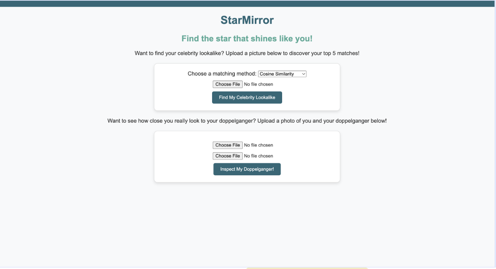
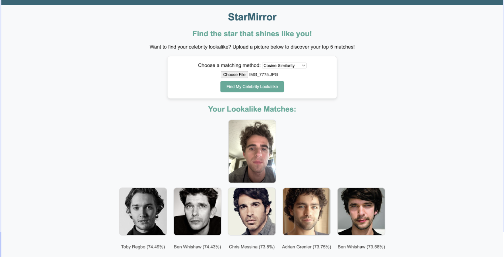
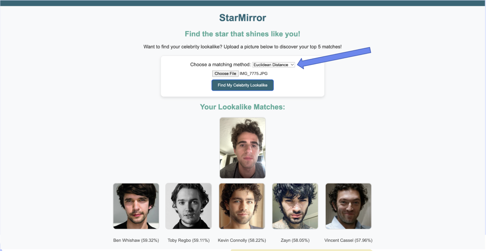

Star Mirror
Are you curious how similar you look to your celebrity lookalike? Star Mirror is a project I made that helps answer this question. Below are the details about the project including its user interface and a report on its functionality.
Application User Interface

Using Star Mirror

